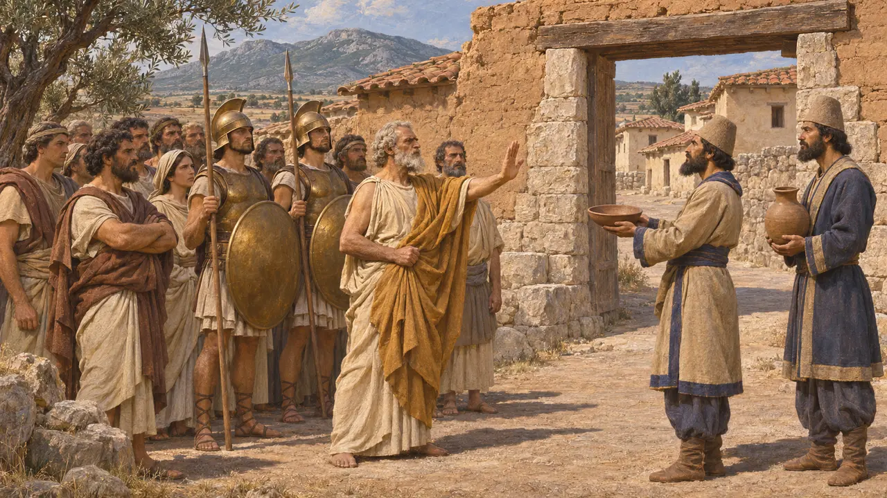
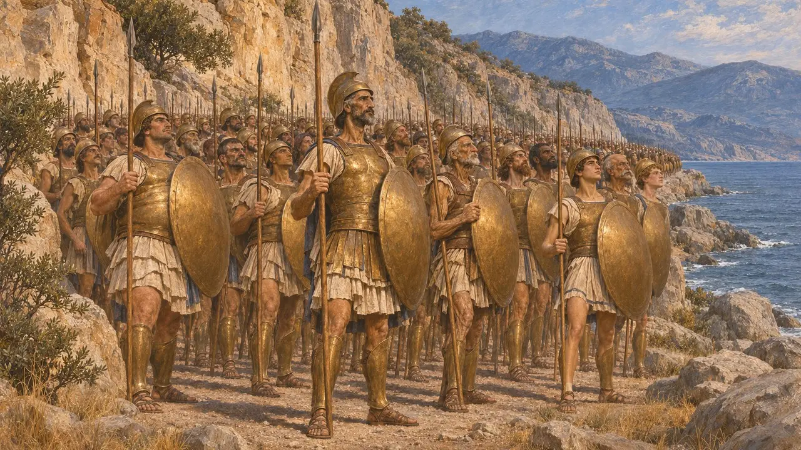
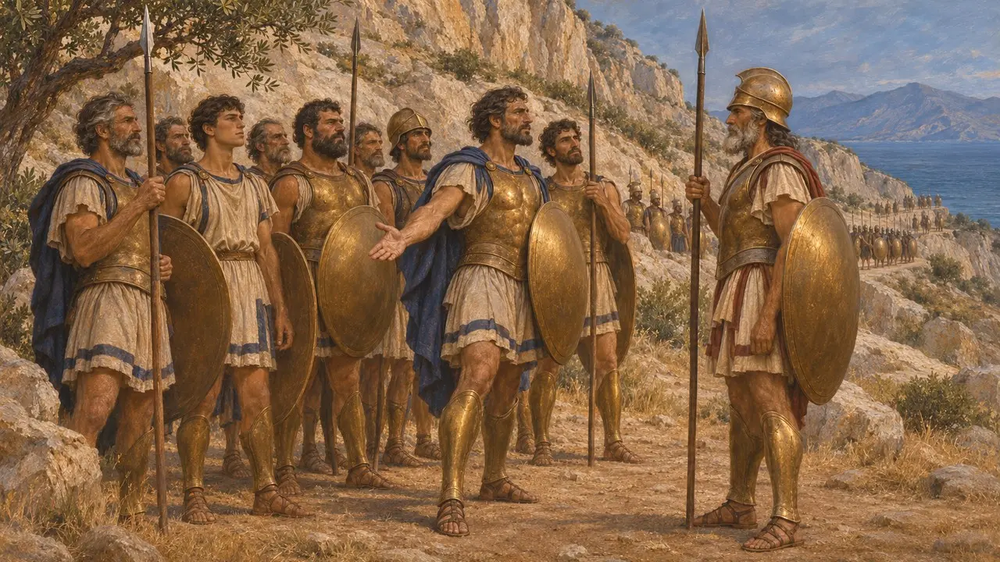
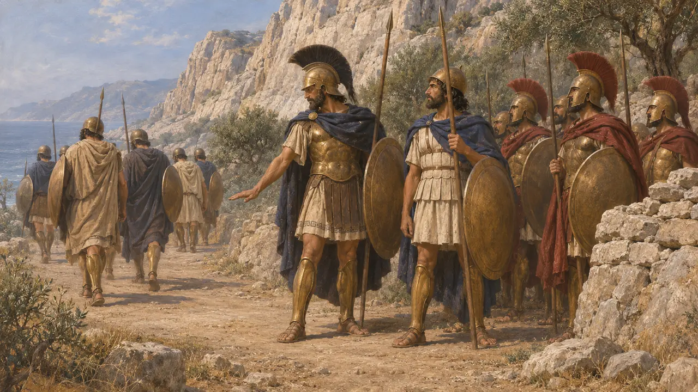
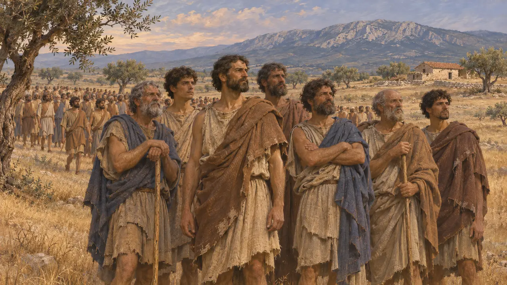

Les Thespiens
Grecs béotiens de Thespies qui tinrent aux Thermopyles, 480 av. J.-C.
Dans le jeu : Niveau 10 : Les Portes chaudes
Les Thespiens étaient le peuple de Thespies, une petite cité de Béotie. Hérodote dit qu'ils envoyèrent sept cents hommes aux Thermopyles et que ceux-ci restèrent mourir avec Léonidas et les Spartiates. Contrairement à la plupart des Béotiens, ils ne donnèrent pas la terre et l'eau à Xerxès, et Hérodote rapporte que leur cité fut ensuite brûlée.
Dans le jeu : Le jeu nomme les Thespiens dans la Chronique, les décrets et les notes de campagne, comme partie du dernier combat de Léonidas. Ils n'ont pas de mécanique propre au-delà de ce que montrent ces textes. Le chiffre du jeu d'environ sept mille Grecs dépasse les totaux d'Hérodote lui-même.

Une cité béotienne qui refusa
Récit antiqueHérodote dit que les Thespiens et les Platéens furent les seuls Béotiens à ne pas donner la terre et l'eau à Xerxès. La plus grande partie de la Béotie, Thèbes surtout, prit le parti perse. Thespies était une petite cité, si bien que refuser comportait sans doute un vrai risque.
Herodotus 7.132

Sept cents au défilé
Récit antiqueHérodote énumère les contingents grecs aux Thermopyles et donne aux Thespiens sept cents hommes. Il nomme leur chef, Démophilos. Ses propres totaux pour l'armée sont inférieurs à sept mille. Le chiffre plus élevé d'environ sept mille est donné par Diodore, un auteur bien plus tardif.
Herodotus 7.202

Pourquoi ils restèrent
Récit antiqueHérodote dit que lorsque Léonidas renvoya les alliés, les Thespiens refusèrent de le quitter et restèrent de leur plein gré. Ils moururent avec les Spartiates le dernier jour. Hérodote nomme un Thespien, Dithyrambos fils d'Harmatidès, comme le plus brave d'entre eux. Léonidas garda aussi des Thébains, qu'Hérodote appelle des otages, et ils se rendirent aux Perses quand vint la fin.
Herodotus 7.222-233

Pourquoi les alliés partirent : une lecture disputée
ContestéHérodote donne deux raisons au départ des alliés. L'une est que Léonidas les renvoya pour les sauver. L'autre, qu'ils partirent par peur et qu'il les laissa aller. Les historiens discutent encore de la bonne, et de l'importance de la troupe. Aucun texte perse ne mentionne les Thespiens.
Herodotus 7.219-222

Après le défilé
Récit antiqueHérodote dit que les Thespiens partirent pour le Péloponnèse et que Thespies fut brûlée quand les Perses traversèrent la Béotie. Pour 479, il rapporte que les Thespiens alignèrent à Platées environ mille huit cents hommes sans armes véritables.
Herodotus 8.50; Herodotus 9.30
Sources
- Herodotus 7.132
- Herodotus 7.202
- Herodotus 7.219-233
- Herodotus 8.50
- Herodotus 9.30
- Diodorus Siculus, Library of History, book 11